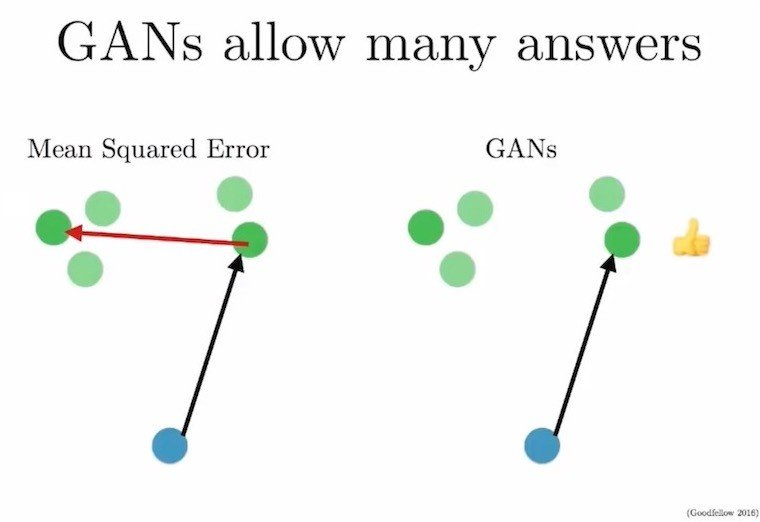
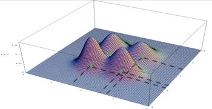

Explaining physical phenomenon consistent with observations
Bayesian data analysis is a way to iteratively building a mathemtical description of a physical phenomenon of interest using observed data.
Setup
Bayesian inference is a method of statistical inference in which Bayes' Theorem is used to update the probability for a hypothesis (\(\theta\)) as more evidence or information becomes available [wikipedia].
Therefore, it is used in the following scenario. I'll refer to the workflow as the workflow of "Bayesian data analysis" following Gelman.
1. We have some physical phenomenon (aka. process) of interest that we want to describe with mathematical language. Why? because once we have the description (aka. mathematical model of the physical phenomenon), we can use it to explain how the phenomenon works as a function of its inner components, predict how it would behave as the inner components or its input variables take different values, (... any other usage of the mathematical model?)
2. We decide how to describe the phenomenon using a mathematical language by specifing:
- Variables
- Relations
This is the step of "choosing a model family (aka. a statistical model)"
3. Now we have specified a family of probability models, each of which corresponds to a particular hypothesis/explaination of the physical process of interest. What we need to do is, to choose the "best" hypothesis from all of these possible hypotheses. To do so, we need to observe how the physical phenomenon manifests by collecting data of the outcomes of the phenomenon.
4. Collect data of the outcomes of the phenomenon.
5. "Learn"/"Fit" the model to the data. (aka, "estimate" the parameters (\(\theta\)) with the data). In English, this corresponds to "find a hypothesis of the phenomenon that matches the observed data "best"". To find such hypothesis \(\theta \in \Theta\), we need to define what is means to be the "best" hypothesis given the model (aka. Hypothesis space) and the observed data. We formulate this step as an optimization problem:
- choose a loss function \(L(\theta \mid \text{model}, \bar{X})\)
- Solve the optimization problem of finding argmin of the loss:
$$ \theta^{*} = \arg min ~~ L(\theta \mid \text{model}, \bar{x})$$
- Note: \(L(\theta \mid \text{model}, \bar{x}) \equiv L(\theta \mid \Theta, \bar{X})\). So we can rewrite the optimization objection as:
More specific scenario: a phenomenon with unobservable variables
Most physical phenomenon involves variables that we can't directly observe. These are called "Latent variables", and a statiscal model with such unobservable variables (in addition to observed/data variables) are called "Latent Variable Model". When we are focusing on the latent variable model, we often use \(Z\) as the latent variables and \(X\) as the data sample variable. That is, if we have \(N\) observation, the sample variable will be a vector of \(N\) data variables: \(X = \{X_1, X_2, \dots , X_N \}\). The general setup of Bayesian data analysis workflow above (ie. choose a model \(\rightarrow\) collect data \(\rightarrow\) fit the model to the data \(\rightarrow\) criticize the model \(\rightarrow\) repeat). We can express the bayesian data analysis workflow using these notations as follows:
(Note these notations are consistent with Blei MLSS2019.)
In English, describe what is the physical phenomenon of interest
Choose a statistical model by specifying
variables (nodes in the graph)
data variables (aka. observable variables): \(X\)
latent variables: \(Z\)
relations (edges in the graph)
as a (parametrized) function of its nodes
Let's denote the set of all parameters in the model, \(\theta\)
Our statistical model can be expressed as: \(P(Z,X; \theta)\)
- Collect data: \(\bar{X}\)
- Fit the model to the observed data
- Choose a loss function (a function wrt parameters): \(L(\theta;\bar{X})\) for \(\theta \in \Theta\)
Inference
Generally speaking, inference (which stems from the Philosophy of Science)
Bayesian inference method
Bayesian inference is a method of statistical inference in which Bayes' Theorem is used to update the probability for a hypothesis (\(\theta\)) as more evidence or information becomes available [wikipedia].
- My sketch
It is not a model, it is a general method(aka. technique, algorithm) that allows to infer unknowns probabilistically via computing, eg. marginal and conditional distributions of the model, the distribution over the parameters given observed data, the conditional distribution over the latent variables given the observed data.
Since it is a general technique (or an appoarch to doing inference) that is not tied to a specific model or a problem, we can use it whenever a suitable setup is presented. In the Bayesian Data analysis workflow, I see two places where we can use the Bayes theorem to infer some unknown quantities in the model (ie. use bayesian inference to compute unknowns given knowns).
Use bayesian inference method to learn the model from the observed data. That is, what is the probability of the parameter of the model given observation?
$$ P(\theta \mid \bar{X})$$
Use bayes' theorem to compute the conditional distribution of latent variables given observed data and a fixed parameter (eg. the learned parameter from step 1)
$$ P(Z \mid \bar{X}, \bar{\theta})$$
Note: I was living in the smog under the impression that "Bayeisan inference" is tied to either 1 or 2. But now I understand "bayesian inference" just means computing probability distribution over the unknowns (either because they are unobservable (ie. coditional distribution of latent variables given observed data), or a subset of variables (ie. marginal distribution) that requires further computation on the joint distribution (aka. the probability model)). So, as Wikipedia's definition clarifies, anytime we have a quantitiy (with prior distribution) and make observations regarding a relevant process, we can update the prior distribution using the observed data via Bayes Theorem. That is all that is in the intimidating word "Bayesian inferece". Gosh, can we please give another name to this way of doing computation with a probability model and data assumed to come from the probability model? "Inference" is such intimedating word. I feel like I need to do philosophy to use this word and everytime I hear this term, I feel like I never understand what the heck it is about because I don't understand what inference means in Philosophy. Yikes! :[
Approximate Inference
When we cannot compute the "flipped" probability ("flipped" using the Bayes Theorem) because it is, for examplge, too computationally expensive, we sometimes resort to an approximation of the true "flipped" probability.
Variational Approximate Inference
People call this "Variational Bayes", which I find it very loaded and unclear whether if the term refers to a method of inference or some model family becuase both "V" and "B" are captialized and it gives me an impressions that it's a name of some specific class of probability distributions. Yikes2! :[ Please give another name to it.
Variational Approximate Bayesian Inference is:
a method of finding a "good" approximate distribution to the "flipped" distribution of your probabity model (ie. \(P\) with a fixed parameter \(\bar{\theta}\)) (ie2: "flipped" using Bayes theorem given your probability model) by formulating a proper optimization problem.
So far, we have discussed about "bayesian inferece", and the need to sometimes be content with an "approximation" to the "flipped" distribution (given a fixed parameter and obsered data). The last thing to understand is the "variational" part, which correpsonds to formulating the search for a "good" approximation distribution as an optimization problem. As usual for an optimization problem, we need to define "goodness", or in this case "loss"
Sketch for understanding the motivation for variational bayesian inference method (aka. Variational Bayes)
Q: What does "multimodal distribution" mean in computer vision literature (eg. image-to-image translation)?
While reading papers on conditional image generation using generative modeling (eg. "Toward Multimodal Image-to-Image Translation" by Zhu et al (NIPS 2017)), I wasn't clear what was meant by "one-to-many mapping" between input image domain and output image domain, "multimodal distribution" in the output image domain, or "multi-modal outputs" (eg. Quora).
Definition
In statistics, a multimodal distribution is a continuous probability distribution with two or more modes (distinct peaks; local maxima) - wikipedia
(single-variable) bimodal distribution
bivariate multimodal distribution
In high-dimensional space (such as an Image domain: \(P(X)\) where X lives in \(d\)-dim space where \(d\) is the number of pixels, eg. \(32x32=1024\). If each pixel \(X_i\) takes a binary value (0 or 1), the size of this image domain is \(2^{1024}\). If each pixel takes an integer value \(\in [0,255]\), then the size of this image domain is \(256^{1024}\). This, by the way, is too big to compute for Mac's spotlight:
What it means by saying "the distribution of (output) image is multimodal" is to say, there are multiple images (ie. realization of the random variable (vector) X) with the (local) maxima value of the probability. In Figure below, the green dots represent the local maxima, ie. modes of the distribution. The configurations (ie. specific values/realizations) that achieves the (local) maximum probability density are the "probable/likely" images.


The green dots representing modes of the distribution over the image domain (which is abstracted into a 2Dim space for visualization, in this case)
So, given one input image, if the distribution of the output image random variable is multi-modal, the standard problem of
Find \(x\) s.t. \(\underset{x \in \mathcal{X}}{\arg\max} P(X)\) (\(\mathcal{X}\) is the image space)
has multiple solutions. According to the paper (Toward Multimodal Image-to-Image Translation), many previous works have produced a "single" output image as "the" argmax of the output image distribution. But this is not accurate if the output image distribution is multi-modal. We would like to see/generate as many of those argmax configurations/output images. One way to do so, is by sampling from the output image distribution. This is the paper's approach.
Multimodal distribution as the distribution over the space of target domains [Domain adaption/transfer leraning]
So far, I viewed the multimodal distribution as a distribution over a specific domain (eg. Image domain), and the random variable corresponded to a realization, eg. an observed/sampled/output image instance. However,
Often confusing categorization of a mathematical model:
- SE
- NB: in CS, people often use "deterministic" to mean non-randomized. This causes confusion:
> "Determinism" means non-randomized. But, "Non-determinism" does not mean "randomized".
- Determinism vs. Non-Determinism
- ...? vs. stochastic/random
- a stochastic (or random) process means,
Write it down where you can see it while reading the paper
Your purpose/goal of reading may change later. You will have a different experience then.
Is there a clear answer for this question? If not, you probably should not go on reading the paper
Warm-up (1 hr)
Think of it like going on a date with a new person. It's a new relationship, so don't try/expect to understand it in one go -- this is rude:)
Go to a quiet place for a few hours. Take your coffee with you
Start by reading the title and abstract
Goal: gain a high level overview of the paper
What are the main goals of the authors?
What are the high level results?
What is the problem the paper is solving?
Skim the paper (~15min)
Look at the figures
Jot down any keywords to look out for when reading
Goal: get a sense for the layout of the paper; get keywords to look out for
Go to introduction, especially if you feel unfamiliar with the field/paper. Okay to do it often.
Goal: get other references to fill in the gap in your understanding
Carefully step through each figure
why?: each figure contain key points of the paper. Authors spend a lot of time creating them and try to condense important information that supports their experiments/hypothesis. Pay particular attention to them.
Goal: Gain feel for what the authors think is most important; Write down what to look out for when reading the paper in detail (which will follow soon)
Take a break. Walk a bit.
First ~pass~ date (1.5hr)
Start taking high level notes. Expect new words, unfamiliar ideas. Mark those (you don't yet need to understand every single word), move on.
This is your first date with the paper. You are not going to learn all gory details about it, but you will ask good questions, understand what motivated the paper, and what it's going to be about.
Begin again with the abstract, skim through the introduction*
Diligent pass through the methods section
Goal: Draw down the overall setup
Read the results and discussion
Goal: write down the key findings and how they were determined
Take a break. Do jumping jacks. Sing a song.
Let's continue.
Revisit the figures: by now, you should be able to get into nitty gritties of the figures (having read the methods, results, and discussion section)
Goal: find more gems from the figures.
Spend about 30min ~ 1hr
Second full pass (1-2hrs)
Goal:
Focus on shoring up what you didn't understand previously,
Gain a command of the methods section
Test if you can write a pseudocode
Being a critical reader of the discussion section
Details:
Pay particular attention to the areas you marked as being difficult to understand. This is why you read a new paper. Don't play safe. Okay to feel uncomfortable. Okay to do it the following day (but don't push it back too much).
Leave no word undefined, unclear. Make sure you understand every sentence.
Skim through areas you feel confident in (eg. abstract, intro, results)
What previous research and ideas were cited that this paper is building off of? (usually introduction)
Was there reasoning for performing this research, if so what was it? (introduction)
Clearly list out the objectives of the study
Did you write down 3 on your note?
Was any equipment/software used? (methods)
What variables were measured during experimentation? (methods)
Were any statistical tests used? What were their results? (methods/results)
What are the main findings? (results)
How do these results fit into the context of other research and their 'field'? (discussion)
Explain each figure and discuss their significance.
Did you write down 9 on your note?
Can the results be reproduced and is there any code available?
Name the authors, year, and title of the paper!
Are any of the authors familiar, do you know their previous work?
What key terms and concepts do I not know and need to look up in a dictionary, textbook, or ask someone?
What are your thoughts on the results? Do they seem valid?
Apply the technique
Most importantly, apply this guideline to your reading.
Modify it to suit your personality.
Write a reading report
This is the end product of your reading. Without it, you didn't do your job.
^Really.
To check out
## check out:
- Jason Eisner (JHU): [how to read a paper](https://www.cs.jhu.edu/~jason/advice/how-to-read-a-paper.html)
- Prof.Murat at Buffalo:
- [how to lead a reading group](https://tinyurl.com/rbree4d)
- [how he reads a paper](http://muratbuffalo.blogspot.com/2013/07/how-i-read-research-paper.html)
- how Prof. Nancy Lynch works: cool!
- Cathy Wu, MIT: [how to lead a reading group](https://tinyurl.com/rbree4d)
make html: generates output html files from files in content folder using
development config file
make regenerate: do make html with "listening" to new changes
vs. make publish: similar to make html except it uses settings in pulishconf.py
make devserver: (re)starts a http server in the output folder. Default port is 8000
Go to localhost:<PORT> to see the output website
ghp-import -b <local-gh-branch> <outputdir>: imports content in
Workflow
Key: Do every work in dev branch. Do not touch blog-build or master.
blog-build will be indirectly modified by ghp-import (or make publish-to-github)
and master is the branch that Github will access to show my website.
So, manage the source (and outputs) only in dev branch.
Local dev
conda activate pelican-blog
cd ~/Workspace/Blog
# Make sure you are on `dev` branch
git checkout dev
# Add new files under `content`
git add my-article.md
# Generate the content with pelican
make html # or, make regenerate # Start a local server
make devserver
# Open a browser and go to localhost:8000
Global dev
Use make publish instead of make html
Update the blog-build branch with contents in output folder
Push the blog-build branch's content to origin/master
These three steps can be done in one line:
bash
make publish-to-github
Version control the source
Important: Write new contents only on the dev branch
bash
git add <files> # make sure not to push the output folder
git cm "<commit message>"
git push origin dev #origin/dev is the remote branch that keeps track of blog sources